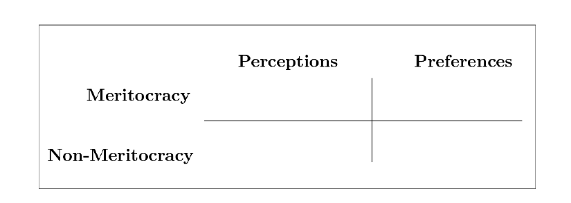
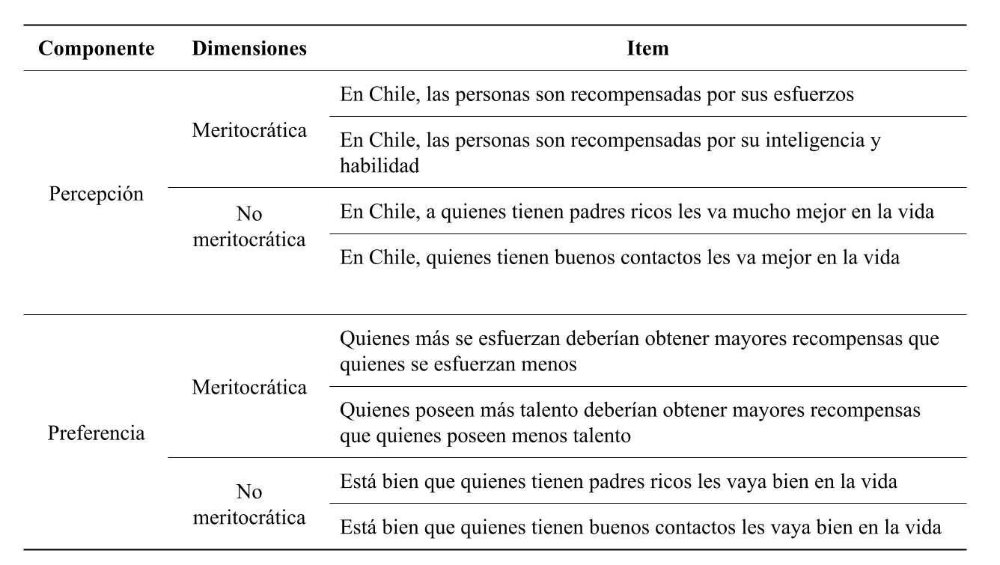

Meritocracia en la escuela: evidencia de invarianza de medición
Andreas Laffert, Juan Carlos Castillo, Kevin Carrasco & René Canales
Instituto de Sociología, Pontificia Universidad Católica de Chile
Departamento de Sociología, Universidad de Chile
Centro de Estudios de Conflicto y Cohesión Social - COES
VI Jornada de Investigadoras/es Jóvenes sobre Desigualdad y Cohesión Social
22 Agosto 2025, Santiago
Contexto y motivación
- ANID/FONDECYT N°1210847 2021-2024 - Meritocracia en la escuela: Fundamentos morales del mercado educativo y sus implicancias para la formación ciudadana en Chile.
- Encuesta panel a estudiantes y apoderados, y experimentos de encuestas
Contexto y motivación
- ANID/FONDECYT N°1250518 2025-2028 - Justicia de mercado y merecimiento del bienestar social
- Estudios comparativos y caso chileno, con encuestas y experimentos online
- Más información: jc-castillo.com/proyectos/posts/fondecyt-jusmer/
Investigación y medición sobre meritocracia
Pese al aumento de la desigualdad económica y la baja movilidad social, las creencias meritocráticas siguen siendo ampliamente compartidas entre la ciudadanía (Mijs, 2019; Sandel, 2020)
Meritocracia: sistema distributivo basado en el mérito (esfuerzo + talento) (Young, 1958)
Agenda de investigación sobre meritocracia
- Dimensión objetiva: movilidad social y la igualdad de oportunidades efectivas (e.g. Goldthorpe, 2003; Van De Werfhorst, 2024)
- Dimensión subjetiva: percepciones, preferencias y actitudes sobre meritocracia y sus efectos (Castillo et al., 2019; e.g. García-Sierra, 2023; Mijs, 2019; Newman, 2023)
Contextos escolares fomentan creencias meritocráticas que funcionan como marcos normativos que justifican desigualdades, ocultando desventajas estructurales (e.g. Batruch et al., 2022; Darnon et al., 2018; Wiederkehr et al., 2015)
Investigación y medición sobre meritocracia
Sin embargo, la conceptualización y medición de meritocracia en la investigación empírica sigue siendo fragmentada
Castillo et al. (2023) proponen un marco conceptual y de medición minimalista para meritocracia en contextos de encuestas.

Este estudio
Evaluar la aplicabilidad de esta escala en estudiantes chilenos, analizando la estabilidad de sus percepciones y preferencias sobre principios meritocráticos y no meritocráticos entre cohortes y a lo largo del tiempo
Participantes y procedimiento
Encuesta Panel Educación y Meritocracia (EDUMER) en sus olas de 2023 y 2024 para estudiantes.
Aplicación de entrevistas CAWI a estudiantes de primaria y secundaria provenientes de 9 escuelas de la región Metropolitana y Valparaíso de Chile.
Primera ola (N = 846) compuesta por 386 niñas, 421 niños, 39 que se identifican como otrosr; \(M_{edad}\) = 13.4, \(SD_{edad}\) = 1.6
Segunda ola (N = 662) compuesta por 303 niñas, 338 niños, 21 que se identifican como otrosr; \(M_{edad}\) = 14.4, \(SD_{edad}\) = 1.6
Variables
Escala de percepciones y preferencias sobre meritocracia
Las variables incluidas en el modelo de medición se operacionalizan según los ítems propuestos por Castillo et al. (2023).
Escala de dos componentes, cuatro dimensiones y 8 ítems (2 x dimensión).
Cada ítem se contestó en una escala Likert de cuatro puntos que va desde “muy en desacuerdo” (1) hasta “muy de acuerdo” (4).
Variables

Estrategia analítica
Análisis Factorial Confirmatorio (CFA):
- Modelo de 4 factores latentes con estimador WLSMV por carácter ordinal de los ítems (Kline, 2023)
- Cuttof de ajuste (Brown, 2015): \(\text{CFI o TLI} > 0.95;RMSEA< 0.06\); \(\chi^2\) \(p\) > 0.05 y \(\chi^2\)/df ratio < 3.
Invarianza de medición:
- Entre cohortes (básica vs media) –> Davidov et al. (2014)
- Longitudinal (dos olas; dentro individuos) –> Liu et al. (2017)
- Cuatro modelos anidados: configural (misma estructura factorial), métrico (+ cargas factoriales iguales), escalar (+ interceptos y umbrales iguales) y estricta (+ varianzas residuales iguales).
- Cuttof de ajuste (Chen, 2007): CFI (\(\Delta \geq -0.010\)) and RMSEA (\(\Delta \geq 0.0\))
Resultados
Descriptivos

Invarianza entre Cohortes
| Model | χ^2 (df) | CFI | RMSEA (90% CI) | Δ χ^2 (Δ df) | Δ CFI | Δ RMSEA | Decision |
|---|---|---|---|---|---|---|---|
| Configural | 24.95 (26) | 0.993 | 0.036 (0-0.037) | 0 (0) | 0.000 | 0.000 | Reference |
| Weak | 47.88 (34) | 0.979 | 0.055 (0-0.05) | 37.748 (8) *** | -0.014 | 0.019 | Reject |
| Strong | 59.66 (38) | 0.974 | 0.058 (0.017-0.054) | 13.379 (4) ** | -0.005 | 0.002 | Reject |
No se cumplen las condiciones en ninguno de los niveles de invarianza, lo que quiere decir que la escala de meritocracia no es estable entre cohortes.
Invarianza Longitudinal
| Model | χ^2 (df) | CFI | RMSEA (90 CI) | Δ χ^2 (Δ df) | Δ CFI | Δ RMSEA | Decision |
|---|---|---|---|---|---|---|---|
| Configural | 117.7 (68) | 0.991 | 0.035 (0.024-0.046) | 0 (0) | 0 | 0.000 | Reference |
| Weak | 122.51 (72) | 0.990 | 0.034 (0.024-0.045) | 4.809 (4) | 0 | -0.001 | Accept |
| Strong | 128.53 (80) | 0.991 | 0.032 (0.021-0.042) | 6.02 (8) | 0 | -0.002 | Accept |
| Strict | 130.17 (84) | 0.991 | 0.031 (0.02-0.04) | 1.635 (4) | 0 | -0.002 | Accept |
Invarianza Longitudinal Condicional
| Model | χ^2 (df) | CFI | RMSEA (90 CI) | Δ χ^2 (Δ df) | Δ CFI | Δ RMSEA | Decision |
|---|---|---|---|---|---|---|---|
| Configural | 122.27 (76) | 0.990 | 0.032 (0.021-0.042) | 0 (0) | 0.000 | 0.000 | Reference |
| Weak | 126.95 (80) | 0.990 | 0.032 (0.021-0.042) | 4.684 (4) | 0.000 | -0.001 | Accept |
| Strong | 128.55 (88) | 0.991 | 0.028 (0.017-0.038) | 1.598 (8) | 0.001 | -0.004 | Accept |
| Strict | 131.64 (92) | 0.991 | 0.027 (0.016-0.037) | 3.086 (4) | 0.000 | -0.001 | Accept |
Discusión y conclusiones
1. Agenda de medición sobre meritocracia: escala no es invariante entre cohortes, pero sí lo es dentro de los mismos estudiantes en el tiempo → aplicabilidad de una escala minimalista
2. Contexto escolar: ya en una temprana edad, estudiantes diferencian entre percepciones y preferencias, meritocracia y no meritocracia
3. Proyecciones: (i) publicar artículo, (ii) profundizar en el rol del esfuerzo, talento y contactos, y (iii) evaluar la validez predictiva de la escala
¡Gracias por su atención!
- Github del proyecto: https://github.com/educacion-meritocracia
Referencias
Batruch, A., Jetten, J., Van de Werfhorst, H., Darnon, C., & Butera, F. (2022). Belief in School Meritocracy and the Legitimization of Social and Income Inequality. Social Psychological and Personality Science, 194855062211110. https://doi.org/10.1177/19485506221111017
Brown, T. A. (2015). Confirmatory Factor Analysis for Applied Research (Second edition). New York London: The Guilford Press.
Castillo, J. C., Iturra, J., Maldonado, L., Atria, J., & Meneses, F. (2023). A Multidimensional Approach for Measuring Meritocratic Beliefs: Advantages, Limitations and Alternatives to the ISSP Social Inequality Survey. International Journal of Sociology, 53(6), 448-472. https://doi.org/10.1080/00207659.2023.2274712
Castillo, J. C., Torres, A., Atria, J., & Maldonado, L. (2019). Meritocracia y Desigualdad Económica: Percepciones, Preferencias e Implicancias. Revista Internacional de Sociología, 77(1), 117. https://doi.org/10.3989/ris.2019.77.1.17.114
Chen, F. F. (2007). Sensitivity of Goodness of Fit Indexes to Lack of Measurement Invariance. Structural Equation Modeling: A Multidisciplinary Journal, 14(3), 464-504. https://doi.org/10.1080/10705510701301834
Darnon, C., Wiederkehr, V., Dompnier, B., & Martinot, D. (2018). «Where There Is a Will, There Is a Way»: Belief in School Meritocracy and the Social-Class Achievement Gap. British Journal of Social Psychology, 57(1), 250-262. https://doi.org/10.1111/bjso.12214
Davidov, E., Meuleman, B., Cieciuch, J., Schmidt, P., & Billiet, J. (2014). Measurement Equivalence in Cross-National Research. Annual Review of Sociology, 40(Volume 40, 2014), 55-75. https://doi.org/10.1146/annurev-soc-071913-043137
García-Sierra, A. (2023). The Dark Side of Meritocratic Beliefs: Is Believing in Meritocracy Detrimental to Individuals from Low Socioeconomic Backgrounds? Social Justice Research, 36(4), 385-409. https://doi.org/10.1007/s11211-023-00413-x
Goldthorpe, J. (2003). The Myth of Education-based Meritocracy. New Economy, 10(4), 234-239. https://doi.org/10.1046/j.1468-0041.2003.00324.x
Kline, R. B. (2023). Principles and Practice of Structural Equation Modeling. Guilford Publications.
Liu, Y., Millsap, R. E., West, S. G., Tein, J.-Y., Tanaka, R., & Grimm, K. J. (2017). Testing Measurement Invariance in Longitudinal Data with Ordered-Categorical Measures. Psychological Methods, 22(3), 486-506. https://doi.org/10.1037/met0000075
Mijs, J. (2019). The Paradox of Inequality: Income Inequality and Belief in Meritocracy Go Hand in Hand. Socio-Economic Review, 19(1), 7-35. https://doi.org/10.1093/ser/mwy051
Newman, B. J. (2023). Economic Inequality, the Working Poor, and Belief in the American Dream. Public Opinion Quarterly, 86(4), 944-954. https://doi.org/10.1093/poq/nfac043
Sandel, M. J. (2020). The Tyranny of Merit: What’s Become of the Common Good? (First edition). New York: Farrar, Straus and Giroux.
Van De Werfhorst, H. G. (2024). Is Meritocracy Not So Bad After All? Educational Expansion and Intergenerational Mobility in 40 Countries. American Sociological Review, 89(6), 1181-1213. https://doi.org/10.1177/00031224241292352
Wiederkehr, V., Bonnot, V., Krauth-Gruber, S., & Darnon, C. (2015). Belief in School Meritocracy as a System-Justifying Tool for Low Status Students. Frontiers in Psychology, 6.
Young, M. (1958). The Rise of the Meritocracy. New Brunswick, N.J., U.S.A: Transaction Publishers.